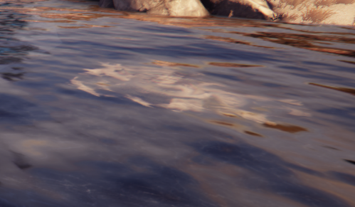

Following Hotfix 22.0.3, you must equip the proper spear to catch the fish in 1 shot. Spear efficiency is determined by the type of fish you are catching. In order to have maximum fishing efficiency, you must equip all spears to catch all the different kinds of fish you might see.
Twilight Bait: Karkina and Sharrac (Sea)
Cuthol Bait: Cuthol (Pond)
Murkray Bait: Murkray (Sea)
Norg Bait: Norg (Lake)
Glappid Bait: Glappid (Sea)
Peppered Bait: Anything else at anywhere
Bait lasts 30 seconds, and must be through in wavy water:

Image by Narration (WFRSB)
The definitive guide to fishing in Warframe